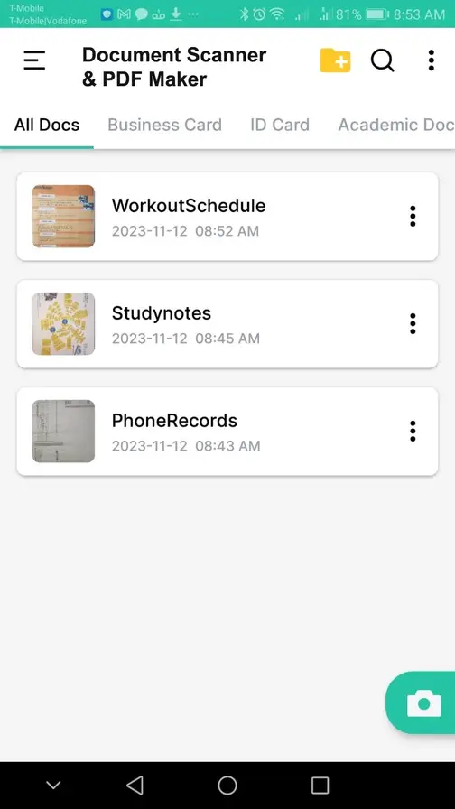
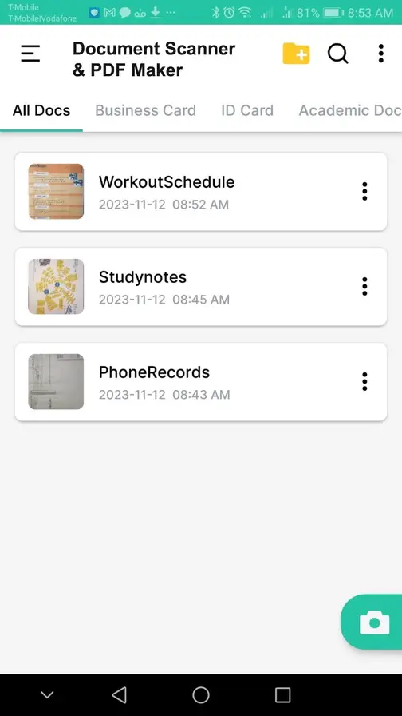
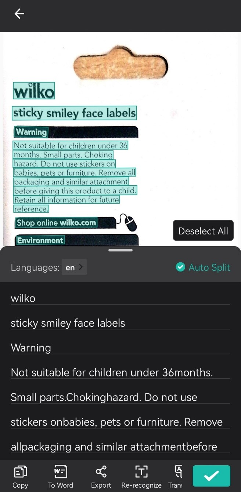
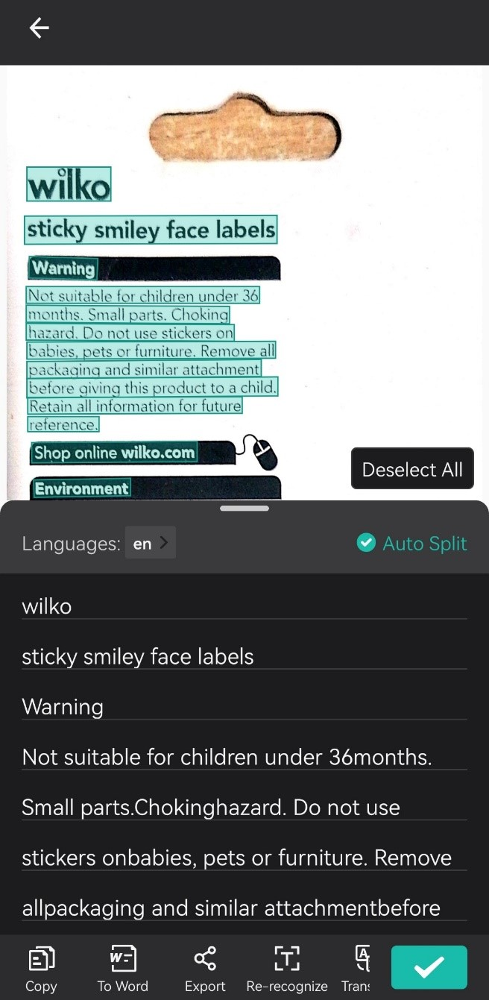

Top 10 Document Scanner Apps on Android
In a world where information travels at the speed of light, it is more important than ever to handle documents quickly and effectively. Whether you're a student collecting class notes, a professional organizing business receipts, or someone simply looking to simplify your physical surroundings, the importance of a dependable document scanner application on your Android device cannot be emphasized.
For the longest time, I depended on pictures to transfer my documents from paper to soft copy. But, having found the potential of OCR scanning software, I have no plans to return to the Paper Ages.
I mostly use scanning apps for business documents and forms of identification, but as you'll see below, you can use them for nearly any type of document: books, receipts, certifications, or even a page of your own handwriting.
The days of large scanners and clumsy wires are long gone; now, the simplicity of digitizing your papers is literally at your fingertips. With so many Android document scanner applications on the market, the problem is determining which one achieves the appropriate blend of user-friendly functionality and feature-rich capabilities.
Join us on a journey into the world of technology as we explore and uncover the best Android document scanner apps that promise to not only simplify but also raise your document management to a whole new level of efficiency. These apps have the potential to change the way you manage, save, and share documents, with features ranging from clever OCR (Optical Character Recognition) technology to seamless cloud connectivity. Say good-by to paper clutter and welcome to a more organized, simplified, and paperless future!
What makes the best OCR cell phone app?
If you don't have a scanner, you may still swiftly digitize documents with a mobile scanning app—all of the apps on this list will do the trick. However, if you need to convert your pages into an editable file, you'll require optical character recognition (OCR) to be a component of your mobile scanning app. That is how your smart phone scans will be converted into editable digital documents.
Keeping this in mind, the best OCR software for mobile scanning should stand out in a few crucial aspects. Not every app on our list fits all of these requirements, but if you're going to scan with your phone, these are the things you'll want to search for — and it's what I was looking for while testing these apps.
- Automatic scanning – Every app on this list has some sort of scanning capability, but I focused on which apps made the process as seamless as possible. This included determining how effectively each app focused on the paper, how well the sensor recognized borders, and how long it took to scan a document.
- Accuracy – Because no one wants to spend hours revising nonsense writing, I paid close attention to how precisely each pp created digital text from my scans.
- File management – A phone scan app doesn't need a lot of bells and whistles, but I did consider how well each app organized, saved, shared, printed, and exported digital files.
- Customization – Scanning and digitizing a document might be only the start for you. If you want to add extra text, a signature, or watermarks to your paperwork, or password-protect them, having customization options is essential.
- Scanning styles – You'll most likely be scanning a number of papers, ranging from IDs and passports to books and invoices. With this type of variability, having several scanning mode options can be a bonus.

 


 
